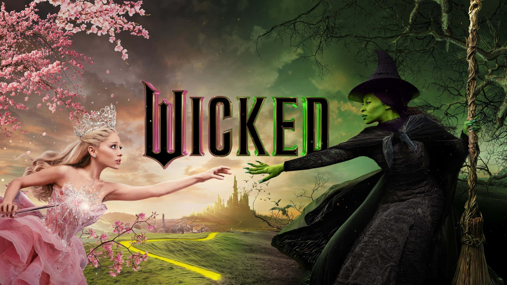
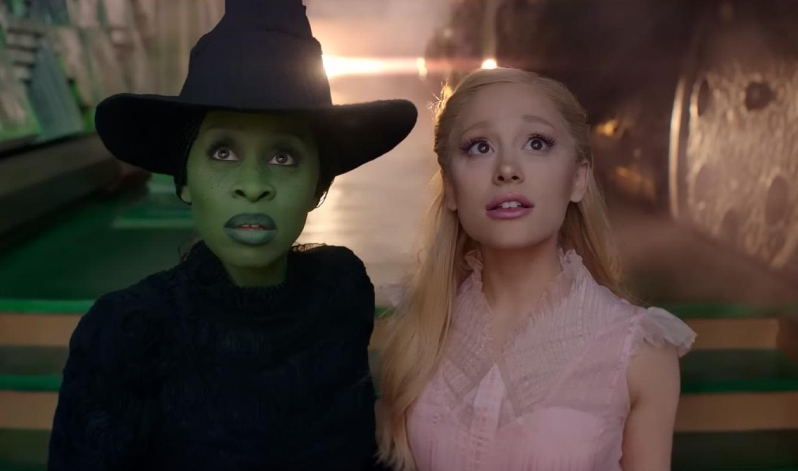
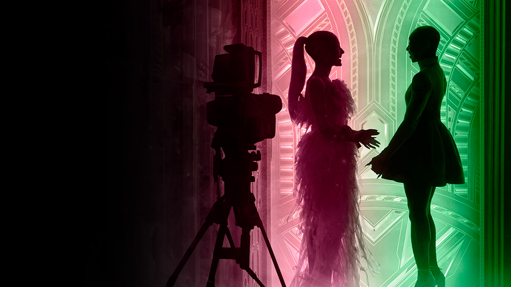
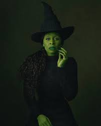
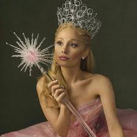
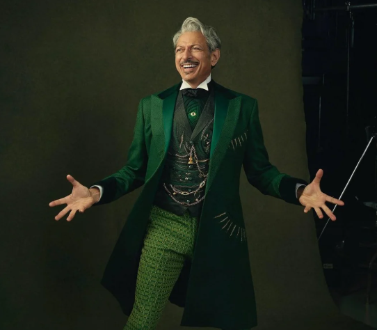

La historia jamás contada de las brujas de Oz

WICKED es un musical de Broadway que cuenta la historia de las brujas de Oz antes de que Dorothy llegara. Nos muestra cómo Elphaba, una chica de piel verde, se convierte en la Malvada Bruja del Oeste, y cómo Glinda se vuelve la Bruja Buena. Es una historia sobre amistad, amor y descubrir quién eres realmente.
Desde su estreno en 2003, WICKED se ha convertido en uno de los musicales más populares del mundo, con canciones increíbles y un mensaje poderoso sobre no juzgar a las personas por su apariencia.
Wicked narra la historia de Elphaba, una joven de piel verde que desde pequeña es rechazada por ser diferente. Al llegar a la Universidad de Shiz, descubre su gran talento mágico y forja una compleja amistad con Glinda, una estudiante popular y ambiciosa. Mientras el mundo de Oz enfrenta cambios políticos y sociales, Elphaba comienza a cuestionar la autoridad del Mago de Oz y las injusticias que se cometen contra los animales.

A medida que Elphaba decide seguir sus ideales, es señalada como villana, la que siempre se sale de lo común y tachada como diferente. Mientras Glinda toma un camino más aceptado por la sociedad, mas visto como el camino facil. La historia explora cómo se construyen los mitos, cómo el poder manipula la verdad y cómo la amistad, las decisiones y los sacrificios definen quiénes somos realmente.


Cynthia Erivo
La futura bruja mala del oeste. Inteligente, poderosa y rebelde, lucha contra las injusticias del mundo de Oz."

Ariana Grande
La futura bruja buena del norte. Popular, carismática y ambiciosa, cuya amistad con Elphaba es el corazón de la historia.

Jeff Goldblum
La figura de poder que gobierna Oz y cuyas decisiones desencadenan el conflicto central de la historia.
La canción "Defying Gravity" es una de las más difíciles de cantar en Broadway
El maquillaje verde de Elphaba tarda 2 horas en aplicarse
WICKED se ha presentado en más de 100 ciudades alrededor del mundo
El musical está basado en el libro "Wicked" de Gregory Maguire de 1995
Ganó 3 premios Tony, incluyendo Mejor Actriz para Idina Menzel
La película de 2024 tardó más de 15 años en producirse desde su anuncio